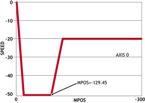
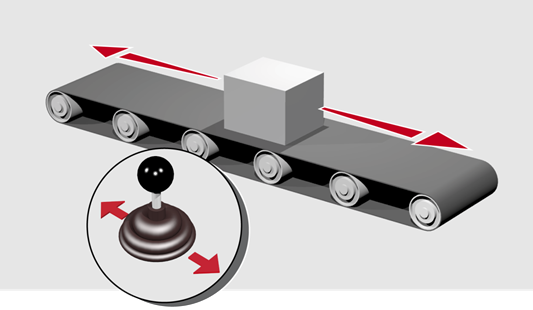

Axis Command
REVERSE
RE
Sets continuous reverse movement. The axis accelerates at the programmed ACCEL rate and continues moving at the SPEED value until either a CANCEL or RAPIDSTOP command are encountered. It then decelerates to a stop at the programmed DECEL rate.
If the axis reaches either the reverse limit switch or reverse soft limit, the REVERSE will be cancelled and the axis will decelerate to a stop.
Run an axis in reverse. When an input signal is detected on input 5, stop the axis.
back:
REVERSE
'Wait for stop signal:
WAIT UNTIL IN(5)=ON
CANCEL
WAIT IDLE
Run an axis in reverse. When it reaches a certain position, slow down.

DEFPOS(0) 'set starting position to zero
REVERSE
WAIT UNTIL MPOS<-129.45
SPEED=slow_speed
WAIT UNTIL VP_SPEED=slow_speed 'wait until the axis slows
OP(11,ON) 'turn on an output to show that speed is now slow
A joystick is used to control the speed of a platform. A dead-band is required to prevent oscillations from the joystick midpoint. This is achieved through setting reverse, which sets the correct direction relative to the operator, the joystick then adjusts the speed through analogue input 0.

REVERSE
WHILE IN(2)=ON
IF AIN(0)<50 AND AIN(0)>-50 THEN 'sets a dead-band in the input
SPEED=0
ELSE
SPEED=AIN(0)*100 'sets speed to a scale of AIN
ENDIF
WEND
CANCEL